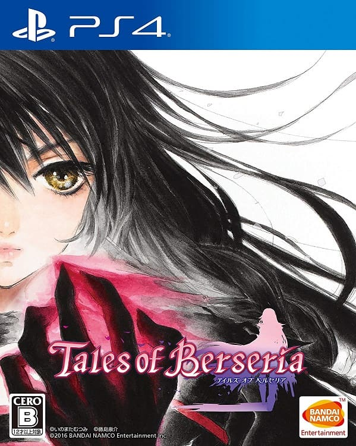

テイルズオブベルセリア
 2016年8月18日発売プラットフォーム：PS3 , PS4 , Win
シリーズ第16作目。
シームレス戦闘はそのままに、通常攻撃を廃止、術技を4つのボタン全てにセットするシステムに変更された。また、前作の戦闘システムの欠点の一つだったカメラワーク問題は、プレイヤーが自由にカメラを操作できるようにすることで解決された。
本作は前作『テイルズオブゼスティリア』と同じ世界を舞台としており、『ゼスティリア』の世界の過去の話という位置づけになっている。
主人公はシリーズ初となる女性単独主人公であり、話題を呼んだ。CEROはB（12歳以上対象）となっているが、ストーリーは暗めの部類に入る。主人公のいた村が壊滅する、旅の動機が“復讐”であることなどは、第1作『ファンタジア』をオマージュしているのだろうか。
テイルズオブシリーズは劇中でパーティメンバーの恋愛が書かれることが多いのだが、本作はほとんどそういった描写がないためパーティメンバー同士の間柄はややさっぱりしているものの、信頼を寄せている描写は多く見られる。